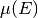
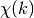
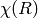

| Larch: X-ray Data Analysis |
One of the primary motivations for Larch was processing XAFS data. Larch was originally conceived to be version 2 of Ifeffit, replacing and expanding all the XAFS analysis capabilities of that package.
As of this writing (June, 2012), this replacement is approximately complete, in that most functionality of Ifeffit 1 is available in Larch. A few features of some processing steps are not fully available in Larch, and there are some slight differences in implementation details such that slightly different numerical results are obtained. On the other hand, some new features are already available with Larch that were not available with Ifeffit 1.2 and some small errors in Ifeffit 1.2 have been fixed.
XAFS Analysis can generally be broken into a few separate steps:
- Reading in raw data.
- Making corrections to the data, and converting to 
- Pre-edge background removal and normalization.
- Interpreting normalized mu(E) as XANES spectra
- Post-edge background removal, conversion to 
- XAFS Fourier Transform to 
- Reading and processing FEFF Paths from external files.
- Fitting XAFS to a sum of FEFF paths.
Broadly speaking, Larch can do all of these steps.
The XAFS-specific functions in Larch are kept in the _xafs Group, which can be easily accessed, as this is in the default search path. Note that many of the XAFS functions take a group argument, which is a group into which resulting data are written. That is, many of the functions have several output arrays and groups. Many of of the functions will return the most fundamental result, but this will be a minimal subset of the possible outputs that would go into the supplied group.
The XAFS functionality is described in further detail in the sections listed below.